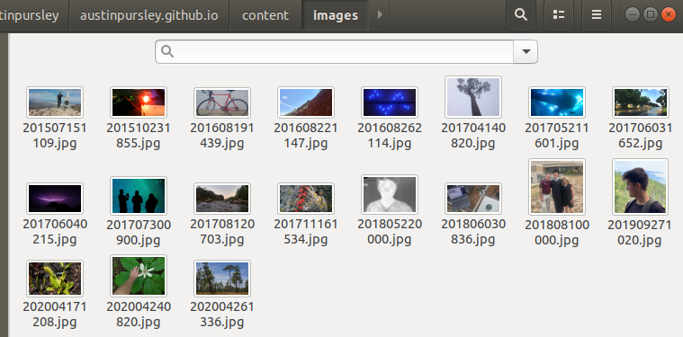
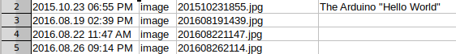
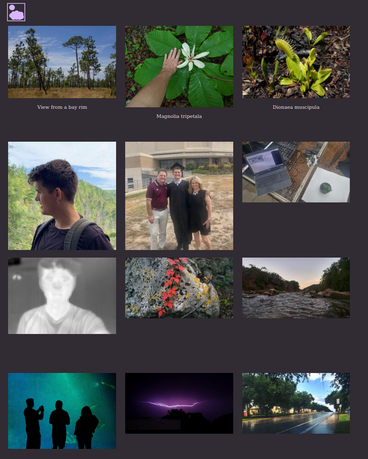

All of the content on this website is (so far) simple static HTML pages with CSS. This works out fine because a personal website like this does not need to be dynamic for user interaction (plus, I can't use backend tools like PHP because I host the site on GitHub Pages). However, manually editing HTML files can be tedious, especially if the same information is being edited in many different places. One solution for this is a static site generator. There are tools out there for static site generation, but I didn't know that when I started this project. I ended up programming my own Python script, where all I have to do is edit data and run the script to automatically generate HTML pages.
Let's say I want a page to show off some photos. As a starting point, I could fill a folder with images that I want to share:
With Python, it's easy to iterate through the images:
pattern = 'images/*.jpg'
img_arr = sorted(glob.glob(pattern), reverse=True)
for img_dir in img_arr:
#do stuff here
I also want to know when the image was created ('Datetime') or any captions ('UserComment') that might have been set. This can be contained in the image's EXIF metadata. Images should usually have 'DateTime' metadata but other metadata like "UserComment" can be set with photo management software. The simplified example code below extracts UserComment data:
# the Pillow (PIL) and piexif libraries
# worth mentioning, very helpful
from PIL import Image
import piexif
# [...]
im = Image.open(img_dir)
exif_dict = piexif.load(im.info.get("exif"))
user_comment = exif_dict["Exif"].get(piexif.ExifIFD.UserComment)
The extracted image data can be exported into a CSV file.
With that data in place, it's simple to insert it into some HTML templates. Example code:
html_start_str = """
<!DOCTYPE html>
<html>
<head>
<title> the_title </title>
<link rel="stylesheet" href="style.css">
<link rel="stylesheet" href="mobile.css" media="screen and (max-device-width: 850px)" />
<link rel="stylesheet" href="mobile_portrait.css" media="screen and (max-device-width: 500px)" />
</head>
<body id="id_text">
<top></top>
<table>
"""
html_image_entry_temp = """
<tr class="content">
<td class="date"><time>date_text</time></td>
<td class="image"><a href="img_src"><img src="thumbnail_src"></a><p>caption</p></td>
</tr>
image_mid = ""
html_end_str = """
</table>
</body>
</html>
"""
# [...]
for row in data:
date = row[0]
elem_type = row[1]
file_name = row[2]
image_entry = html_image_entry_temp.replace("img_src", img_dir)
image_entry = image_entry.replace("thumbnail_src", thumbnail_dir)
image_entry = image_entry.replace("date_text", date)
image_entry = image_entry.replace("caption", caption)
image_mid += image_entry
# [...]
Html_file = open(title + ".html", "w")
html_str = html_start_str + image_mid + html_end_str
Html_file.write(html_str)
Html_file.close()
The final result only has two steps: (1) set images in the folder with correct EXIF metadata, and (2) run the program. Pretty easy. If there are enough images, new HTML pages will be created so that not too many images are on one page. Thumbnails will also be generated. Example page:
You can visit the images page here. I also did a similar process process for text posts and combined image and text posts. All of these pages generate when the "update.py" program is run.
See GitHub for code and more details.